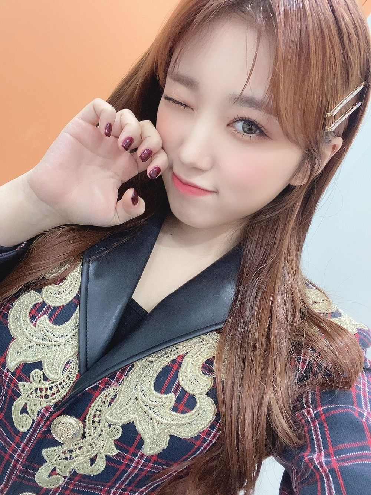

어제부터 계속 라자냐를 먹고싶어서 점심에 시켜서 먹었당 ㅎㅎ
한국에서는 한번밖에 먹어본적이 없어서 그것도 혜원언니 시켜준거였구 난 맛있는 가게도 몰라서
시켰는데 맛있을까... 하면서 먹었는데 ㅋㅋㅋㅋ 완전 맛있었어요!!
이호는 라자냐 좋아해??
昨日からなぜかラザニアが食べたくなって、今日のお昼に食べたよー！
韓国では、一回しか食べたことなかったしそれもカンちゃんが頼んでくれたし、なこは美味しいお店とか知らないから、
今日頼んだんだけど、美味しいかな…って不安やったけど、食べてみたらやっぱりめっちゃ美味しかった🥺
이호もラザニア好き？
